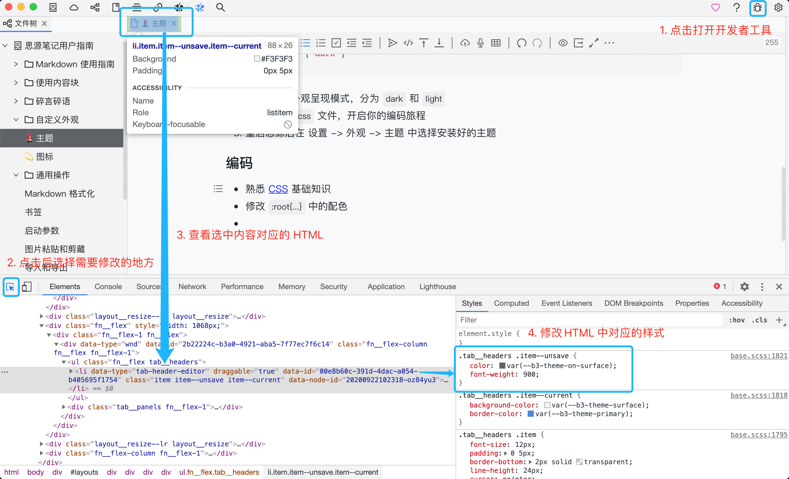

安装
手动
- 从某处获取主题并解压
- 在设置 - 外观 - 主题 - 打开主题文件夹
- 将主题拷贝到该文件夹中
- 重启在设置 - 外观 - 主题中选择所需主题
社区集市
- 在设置 - 外观 - 主题 - 集市中在线浏览社区开发者贡献的主题
- 选择所需主题在线安装或者更新
开发
步骤
-
为你的主题取一个好听的名字，如
alice -
在思源中依次点击 设置 - 外观 - 主题 - 打开主题文件夹
-
在打开的文件夹中新建文件夹
alice，在alice中新建theme.css和theme.json文件theme.json文件如下：{ "name": "midnight", "author": "Vanessa", "url": "https://github.com/Vanessa219", "version": "1.0.0", "modes": ["dark"] }modes为外观呈现模式，分为dark和light，其余字段请按需修改。 -
打开
theme.css文件，开启你的编码旅程 -
重启思源后在 设置 - 外观 - 主题 中选择安装好的主题
编码
- 熟悉 CSS 基础知识
- 修改
:root{...}中的配色 - 按照图中 1-4 步不断进行修改
- 将修改后的内容复制贴入
theme.css中并保存 - 在
Network中勾选Disable cache后运行window.location.reload()以查看最终效果
上架主题集市
上架前请确认你的主题仓库根路径下至少包含这三个文件（仓库示例）：
- theme.css
- theme.json（请确保 JSON 格式正确）
- preview.png（请压缩图片大小在 128 KB 以内）
确认无误以后请通过对社区集市仓库发起 pull request，修改 themes.json 文件。该文件是所有社区主题仓库的索引文件，格式为：
{
"repos": [
"username/reponame@commithash"
]
}
其中 commithash 请填写你的主题仓库上最近一次发布版本的 Git 提交哈希值，请使用完整哈希值，不要使用 7 位短值。
更新
如果你开发的主题更新了版本，请记得：
- 更新你的主题配置 theme.json 中的 version 字段
- 再次对社区集市发起 Pull Request